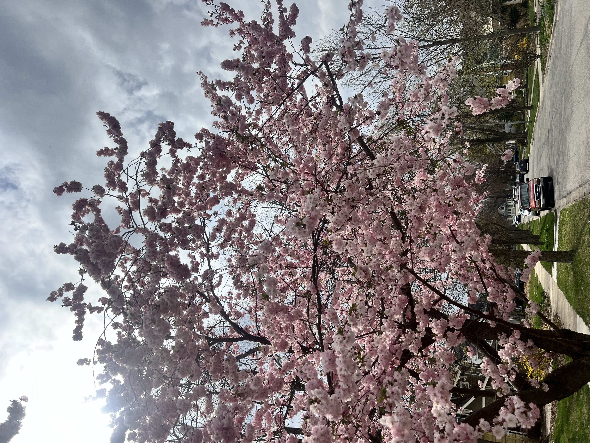

Education
Master of Science in Information — May 2026
University of Michigan School of Information
Big Data Analytics
Big Data Analytics
Bachelor of Science in Public Health — August 2022
University of Michigan School of Public Health
- Focused on population health, research methods, and data-driven decision making
- Strong foundation in research design and analytical thinking
Experience
Applied Research & Data Analysis Intern — U-M Political Science
Jan 2026 – Present • Ann Arbor, MI
- Cleaned, validated, and analyzed survey data from more than 3,000 respondents using Python.
- Analyzed open-ended responses and translated findings into charts and concise research summaries.
- Documented quality-control procedures to support reproducible workflows.
Graduate Coordinator for Events and Partnerships — U-M Spectrum Center
Sep 2025 – May 2026 • Ann Arbor, MI
- Coordinated inclusive programs and cross-unit partnerships while managing budgets, logistics, and communication.
- Used Qualtrics to track attendance, collect feedback, and organize data for program evaluation.
Program Assistant — U-M Office of the Provost
Aug 2024 – Aug 2025 • Ann Arbor, MI
- Analyzed engagement and institutional data related to travel safety and identity-abroad initiatives.
- Turned findings into reports, presentations, visual materials, and accessible web resources.
Foreign Expert — Mahidol University
Dec 2022 – Jul 2024 • Bangkok, Thailand
- Supported a community-based malaria intervention serving migrant populations along the Thailand–Myanmar border.
- Trained community health volunteers and developed evaluation forms, KPI summaries, and briefing materials.
- Coordinated communications across 186 institutions in more than 30 countries.
Career Support Specialist — U-M School of Public Health
Sep 2021 – May 2022 • Ann Arbor, MI
- Facilitated career-development workshops, provided individual guidance, and created accessible student resources.
Outside the Classroom
Outside of work, I enjoy hiking, kayaking, biking, strength training, traveling, theater, and board games with friends.



© 2026 Hassan Beydoun